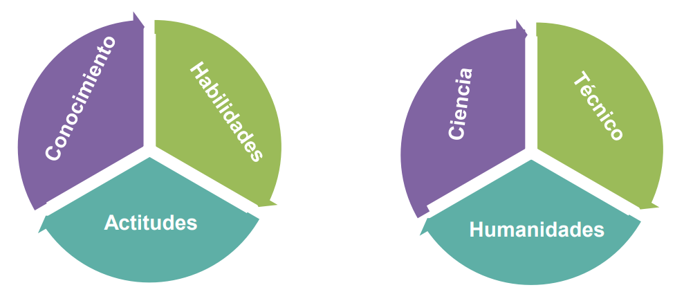

INFORMÁTICA: Es el estudio de las computadoras y la computación, incluidos sus fundamentos teóricos y algorítmicos del software y hardware, y sus usos para procesar información.
La disciplina incluye el estudio de: algoritmos y estructura de datos, diseño de computadoras y redes, modelo de datos y proceso de indormación e inteligencia artificial.
INGENIERÍA INFORMÁTICA: Rama de la ingeniería eléctrica que integra varios campos de la informática necesarios para desarrollar hardware y software informáticos.
TRABAJO DE UN INGENIERO INFORMÁTICO: Están involucrados en aspectos de hardware y software de la informática, desde diseño de microcontroladores, microprocesadores, computadoras personales y supercomputadoras individuales, hasta el diseño de circuitos. También escriben software y hardware para: microcontroladores integrados, diseñan chips, diseñan sensores analógicos, diseñan placas de circuitos de señal mixta, diseñan sistemas operativos, diseñan sistemas robóticos, diseñan sistemas de control y diseñan sistemas de IA.
También brindan soluciones de IA para satisfacer las necesidades de indivíduos y organizaciones basadas en software y hardware.
Los beneficios que las TIC brindan a las personas son: ahorrar tiempo, asisten a las personas, transmisión cultural, favorecen acceso información, seguridad, nuevas formas de ocio y otras formas de aprender.
La formación de un ingeniero informático consiste en la búsqueda de ampliar la visión del mundo y el papel de la ingeniería informática y de la ingeniería en la sociedad. NO TODO ES TECNOLOGÍA. El objetivo de estas personas es proporcionar soluciones a los problemas, identificar desafios y necesidades, y ayudar a futuros ingenieros con proyectos de vida.

LEY DE MOORE: (1965) Cada dos años se multiplican la cantidad de transistores. Sugiere que el proceso computacional será significativamente mas rápido, pequeño y eficiente con el tiempo. Por último, los transistores no operarán en circuitos más pequeños a temperaturas más altas; si los transistores se enfrian se creará más energía que la energía que pasa por ell propio transistor.